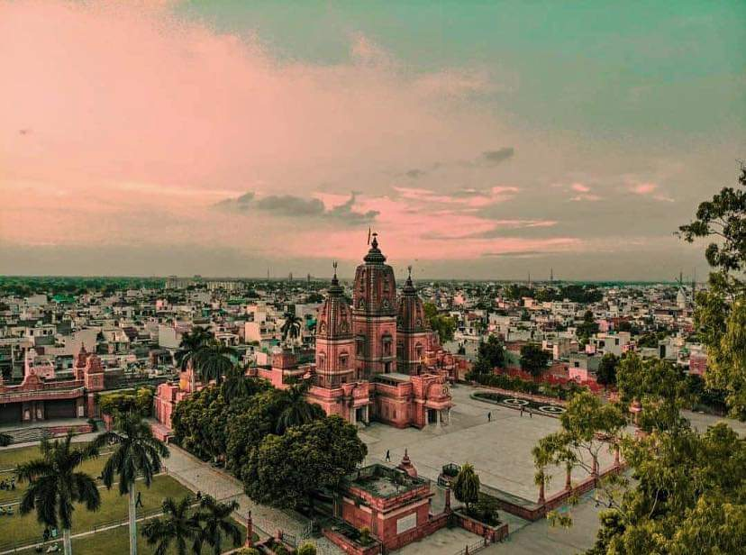
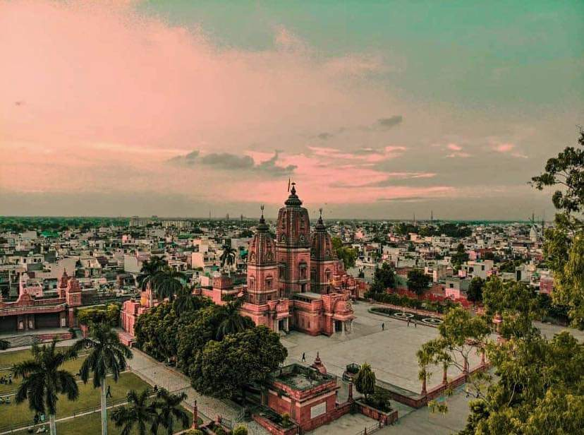

Modinagar is a town in Ghaziabad district of Uttar Pradesh. It is a part of National Capital Region. The city was founded in 1933 by Rai Bahadur Gujar Mal Modi who established the Modi Group of Industries here along with his brother, Kedar Nath Modi. It is best known as the home of business conglomerate Modi Enterprises. In recent years, Modinagar has been developed as an educational hub as many new institutions are being established in and around the city due to its location in National Capital Region. Modinagar is also a part of Delhi–Meerut Regional Rapid Transit System. It is connected to recently constructed Delhi - Meerut Expressway via Bhojpur exit.Fomous landmarks include Laxmi Narayan Mandir and Mahamaya Devi Mandir.

 
